微出国 · 学
路线 › 知识卡
知识卡：不看正文也能拿到核心内容
全站 152 张知识卡，按页面分组。一张卡只画正文里的一段——一个判断、一条算法、一份清单；卡上每个字都能在对应页面的正文里找到（资料核验 2026-09-20）。
境外赠与与继承：加拿大在哪一端征、哪一端管

- 先看先读两列再横看两行：同一次转移，在两端承担的税务作用不同。
- 易漏图中前提只对应国内父母及国内房子、存款；换成应税加拿大财产要另判。
- 下一步去练习分别判断给出方与接收方，再带资产所在地找持牌专业人士。

- 先看先区分收到款项、银行报告和房屋成本，这三件事走的是不同判断。
- 易漏资金来源审查与税务申报是两件事；房屋成本也不是沿用父母历史买价。
- 下一步去知识卡核对后续申报，再带资金来源和成本资料找持牌专业人士。

- 先看先看四类后续事件：收益、境外财产、信托、家庭再转。
- 易漏境外遗产在管理期间的分配不用报 T1142；遗产管理完变成持续存在的境外遗嘱信托之后才另看。
- 下一步去练习把每项事件对应到申报动作，疑难信托安排找持牌专业人士。
税务居民判定：三层联系与那条不存在的「六项门槛」

- 先看先看第一行：核心家庭或住所线索出现时，判断往往很快收束。
- 易漏第二层不是计数游戏，单独一项足以定性的情形并不寻常。
- 下一步去练习把自己的事实分别放进三层，再带边界事实找持牌专业人士。

- 先看先看两栏是否在数项目：左边设门槛，右边看组合权重。
- 易漏数量法两头都会错：五项强联系如本地工作、省医保、驾照会被放走；六项弱联系如信用卡、邮箱、报刊订阅反而会被判成居民。
- 下一步去模考判断题目到底考哪一版，再用讲解核对实际判断方法。

- 先看先盯两个方向：离开多久与有没有回来的打算，都不能单独定性。
- 易漏真正要一起核对的是是否还留有住所、家庭及其他居住事实。
- 下一步去练习按居住联系整理事实，再带跨境安排找持牌专业人士。
协定加比规则：四级台阶有先后，不是综合考虑

- 先看先看每一行右栏的箭头：它决定是否继续。
- 易漏配偶在协定第二层只是一项关系因素，不等同加拿大国内法的主要联系。
- 下一步去练习；问持牌专业人士：哪一层首次足以定案？

- 先看先分清是在判加拿大居民，还是在做协定 tie-breaker。
- 易漏婚姻关系在协定里不是单独终结条件，必须放回整体联系中。
- 下一步去「练习」做同事实双尺对照；边界案带生活与经济联系证据咨询专业人士。

- 先看第一眼只看今年真实在美天数，先定哪扇门还开着。
- 易漏协定不免FBAR、8938、5471、3520；绿卡持有人主张协定还可能危及移民法身份。
- 下一步去「讲解」核两条路径；绿卡或多表申报个案带身份与账户资料找专业人士。
TFSA 与 RESP 会不会触发 3520：先分类，再判外国
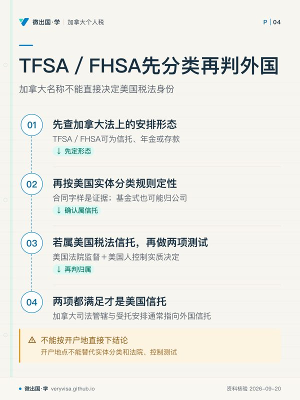
- 先看先看合同和法律形态，再决定美国税法把它当什么。
- 易漏开户在加拿大只是事实之一，不能替代美国实体定性与信托测试。
- 下一步去「讲义」核合同关键词；边界结构带开户文件找跨境税务专业人士。
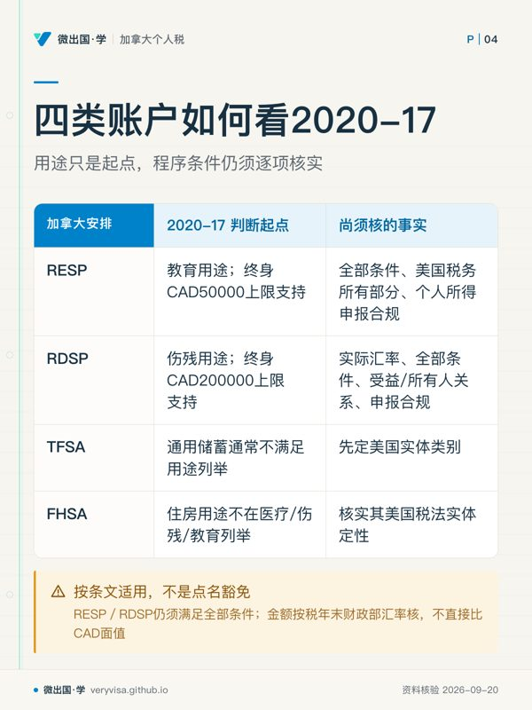
- 先看先看账户用途能否落入程序列举，再核附加条件。
- 易漏加元名义上限不是直接答案；换算口径会影响是否满足金额条件。
- 下一步去「知识卡」逐项核条件；带账户条款与年末数据咨询跨境税务专业人士。
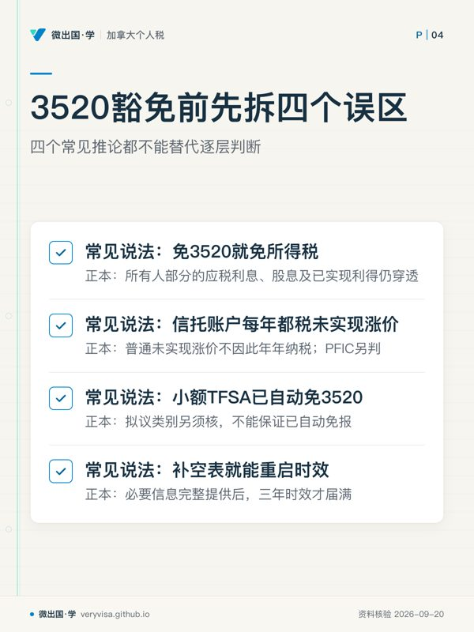
- 先看逐条检查“因为A，所以B”的跳步是否成立。
- 易漏程序性申报处理与个人所得项目是两条线，不能互相替代。
- 下一步去讲义；问持牌专业人士：美法下属何类、谁是税务所有人？
入境那一刀：成本重置到入境日市值，证据要自己留
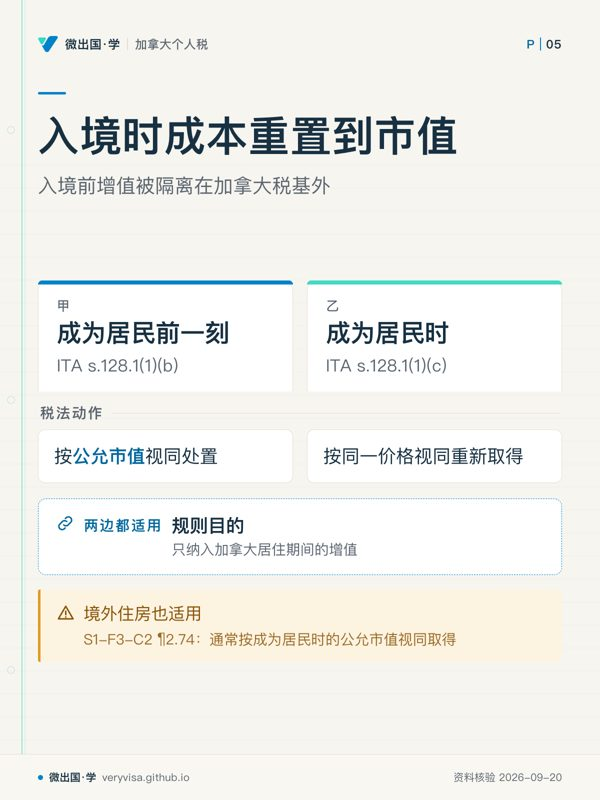
- 先看先分清切点两侧的法律动作，别把国内原始买价带进来。
- 易漏应税加拿大财产等几类例外，不走这条一般规则。
- 下一步去讲解核对离境时如何切分，再把入境估值依据长期留存。
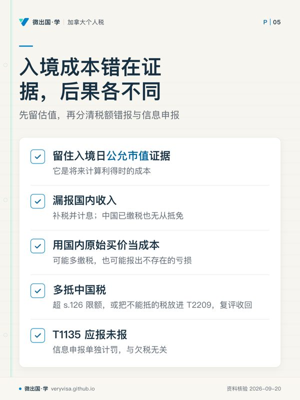
- 先看先看每种错法最终落到哪一种调整或罚则。
- 易漏多年以后，最难补的往往是当日估值依据，不是买房发票。
- 下一步去练习按四种错法逐项自查；边界税额问题带底稿问持牌税务专业人士。
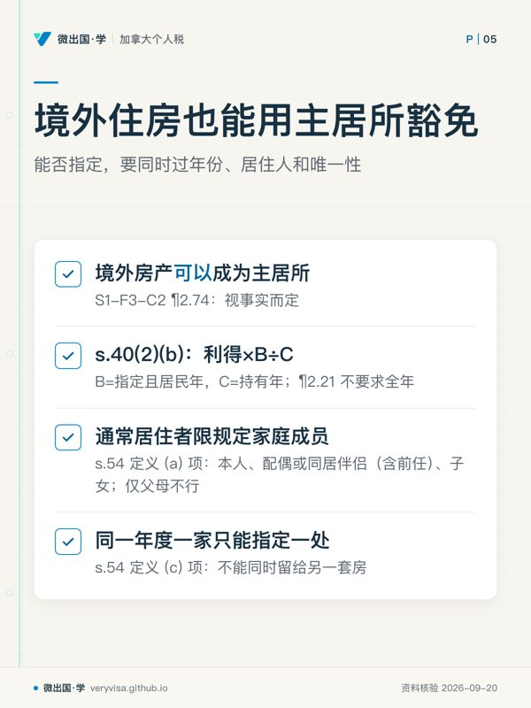
- 先看先判断这套房哪些年度有资格，再决定是否值得拿来指定。
- 易漏入境视同重新取得；取得年“加一年”按条文似可用，但无 CRA 逐字说明，个案回原文。
- 下一步去知识卡把两套房逐年增值并排，再决定各年分配。
加拿大人的美国遗产税：判的是住所地，缴不缴看占比
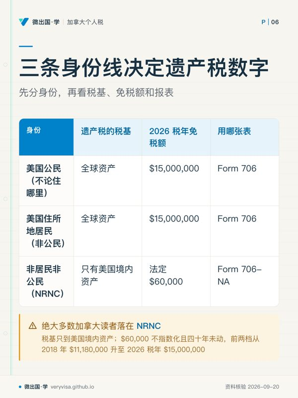
- 先看先找到自己的身份行，再横向读适用范围与申报工具。
- 易漏遗产税身份另有判据，不能拿所得税居民测试直接替代。
- 下一步去讲义先确认自己属于哪一行，再据此判断申报表格。
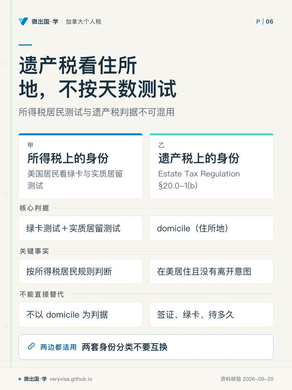
- 先看先把“居民”放回各自税制里，不要看到同一个词就套同一标准。
- 易漏一个人的所得税结论，不能单独推出遗产税结论。
- 下一步去讲解整理长期居住意图的事实；边界情况带签证与居住安排问持牌专业人士。
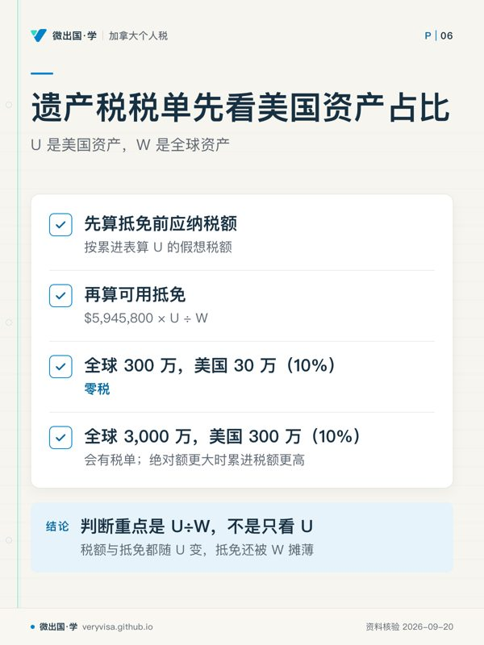
- 先看先走完税额与抵免两步，再看两组同占比案例为何分叉。
- 易漏不要把这条判据误读成“占比相同，税就相同”。
- 下一步去练习按正本两组数据重算；复杂资产归类带清单问持牌跨境税务专业人士。
家庭内部转移的归属规则：给谁、怎么给、归不归

- 先看先找两栏答案不同的行，它们最能暴露归属边界。
- 易漏配偶这一行还受居住身份和关系存续期间限制；成年亲属要先分清是赠与还是借款。
- 下一步去练习，按对象、方式和收入类型逐笔判断由谁申报。

- 先看先横看资本利得边界一行，左右两边不归属的原因不同。
- 易漏未满 18 岁一栏讲的是给子女的财产；成年人一栏讲的是非公平交易贷款，别把条文互换。
- 下一步去讲解，带着「为什么卖出后不归属」逐条核对条文结构。

- 先看先看第三条，它会回头检查以前每个年度的付息是否按时。
- 易漏一票否决：只要有一年迟付，哪怕只晚几天，这一年和以后所有年份的收入都重新归回出借人；IT-511R 已归档。
- 下一步去练习，按日历年核对付款记录和截止日。
非居民预提税：两条互不相通的轨，和 2026 年租客那条例外
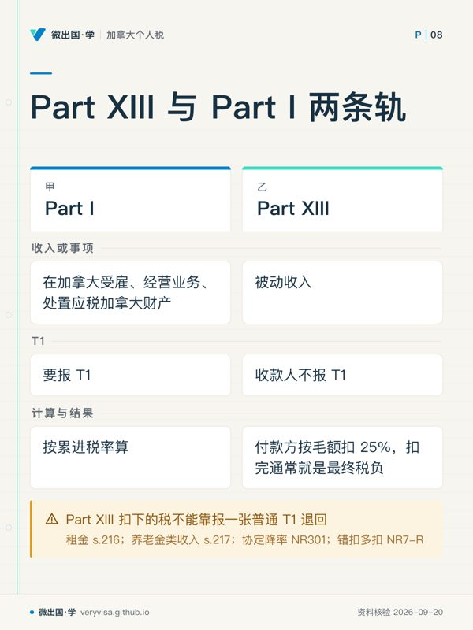
- 先看先按收入性质分轨，再看谁负责申报或扣缴。
- 易漏最容易错在把两套机制混用；退款或降率要走各自法定入口，不能拿另一条轨的普通申报替代。
- 下一步去路线，带着收入类型和现有表格确认入口。
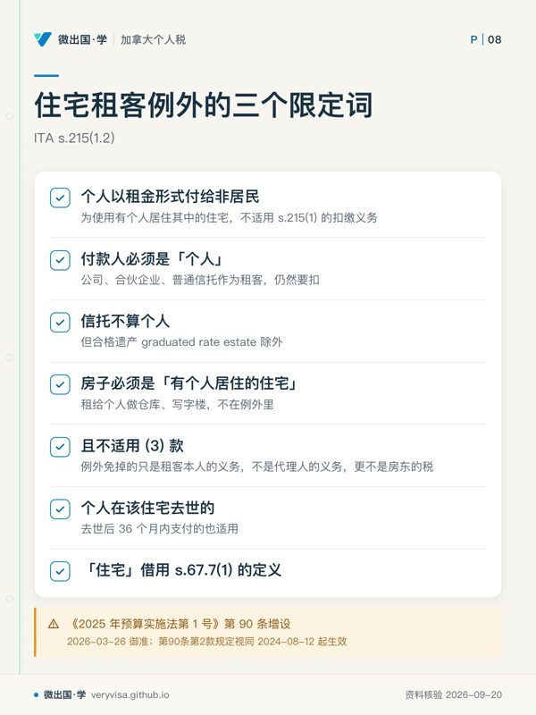
- 先看先看三个限定词：付款人、住宅用途、收租方式，三者都影响扣缴责任。
- 易漏去世后的付款另有时间范围；「住宅」采用 s.67.7(1) 的定义，不要只按房屋名称判断。
- 下一步去讲解，逐项核对付款人身份、实际用途和收租安排。
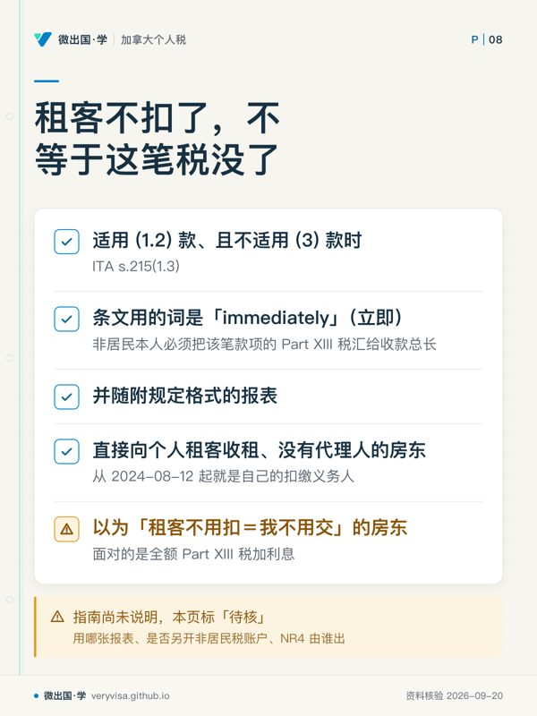
- 先看先看「立即」：租客不再扣缴后，汇缴责任直接落到非居民本人。
- 易漏待核：2026-09-13 的 T4144、T4061 未说明住宅租客例外；报表、非居民税账户、NR4 由谁出仍待核。
- 下一步去讲解，带着报表、账户和 NR4 三个问题找持牌专业人士。
RESP 的三笔政府补助：结转有铁律，窗口错过不可逆
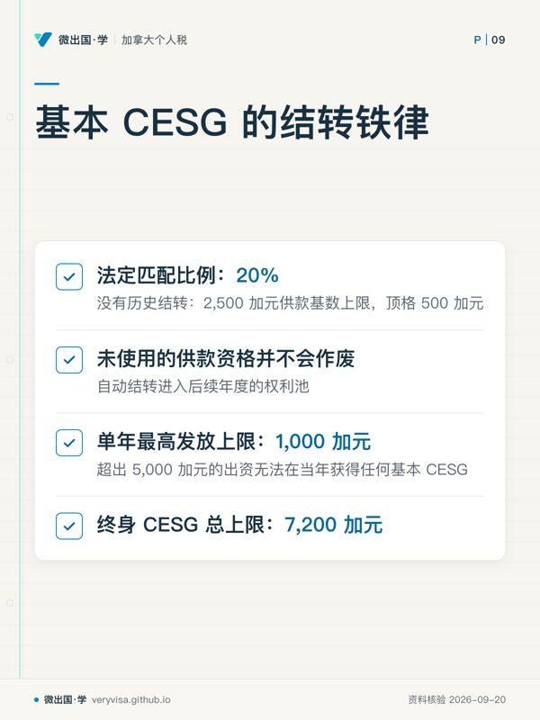
- 先看先盯单年最高值，它决定历史余额能补多快。
- 易漏可结转不等于可一次领完；补领年度还受单年限制。
- 下一步去练习，比较不同供款节奏下的补领结果。
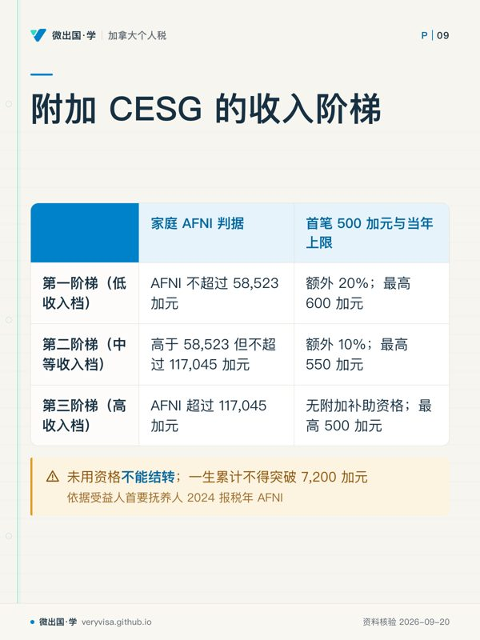
- 先看先横看收入落在哪一档，再看首笔供款增加多少补助。
- 易漏判断时用的是更早报税年的家庭口径；没用掉的附加资格不会往后滚。
- 下一步去练习，用跨档收入测试表格判断。
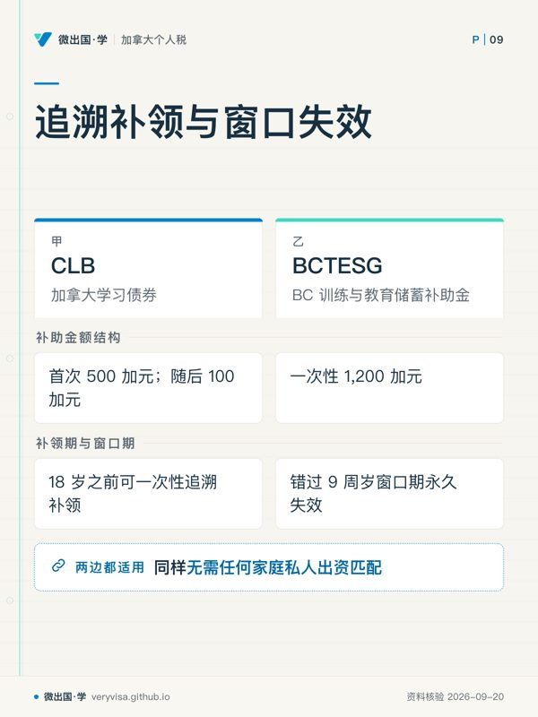
- 先看先看最后一行：两种补助真正拉开差距的是补救空间。
- 易漏图外还要看资格：CLB 有收入门槛，BCTESG 还要求 BC 省合法常住居民。
- 下一步去练习，把开户时间和孩子年龄带入判断。
跨境身后事：基础提升两地同一个数，RRSP 是那个例外

- 先看先看右栏，例外不在申报，而在死亡后的成本处理。
- 易漏最容易漏的是把「人没了，账户资产就重新计算成本了」套到 RRSP 上。
- 下一步去讲解，继续追 IRD 在提取时如何计税。

- 先看先把前两项分开：一个问要不要报，一个问税怎么算。
- 易漏四类其他注册账户的 3520 定性不一致，尤其 TFSA、FHSA 没有现成豁免。
- 下一步去讲义，逐个账户核对申报结论。

- 先看先看两栏的金额口径：一边是收到遗产，一边是持有境外财产。
- 易漏美国一侧超过 $5,000 的单笔还要逐笔列明；不申报罚则是 5%/月、封顶 25%。
- 下一步去练习，分别判断该看 Form 3520 还是 T1135。
中加协定：养老金没有那一条，加美口径套不过来

- 先看先看第二列的「否」，别先拿加美口径代入，再转到最右栏。
- 易漏两个期限不是一回事：申报表看年度结束后的窗口，NR5 则按固定频率交。
- 下一步去「练习」，带「协定不降率时怎样处理」找持牌专业人士。

- 先看先比前两行：两项在加美协定有明确待遇，换到中加就落到不同条文结构。
- 易漏CRA 的 T4061 指南列出某些养老金给付有协定豁免的国家名单，名单里没有中国。
- 下一步去「练习」，带「第 20 条怎样影响养老金」找持牌专业人士。

- 先看先分开看三个地方，不要因为中文地名相近就假定同一协定适用。
- 易漏香港已有独立协定；台湾条文本页没核；澳门连是否另有安排都没有明确答案。
- 下一步遇到澳门个案，去「讲义」，再回 CRA 与持牌专业人士确认。
卫星家庭：CCB 不看住哪，CGEB 只看月初是不是居民
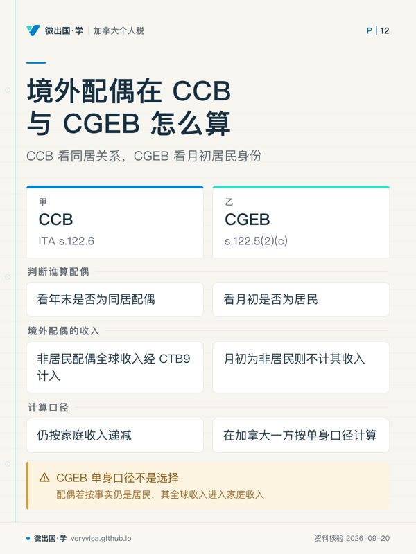
- 先看先比对左右两栏的判定入口，再追踪收入落到哪一侧。
- 易漏两地工作本身不会切断伴侣关系；税务居留仍要靠事实认定。
- 下一步去讲解，并带住所、工作、停留与家庭关系问题找持牌专业人士核对。
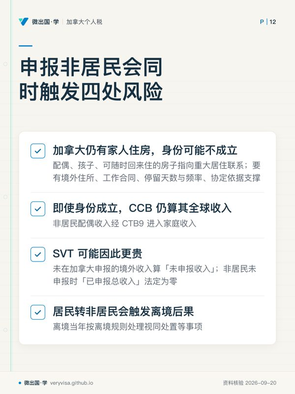
- 先看先把身份、福利、SVT、离境后果四条链分开看。
- 易漏勾选申报栏不会创造税务居留结论；关键在能证明的生活与工作事实。
- 下一步去讲义，并带能证明居住中心的资料找持牌专业人士核对。
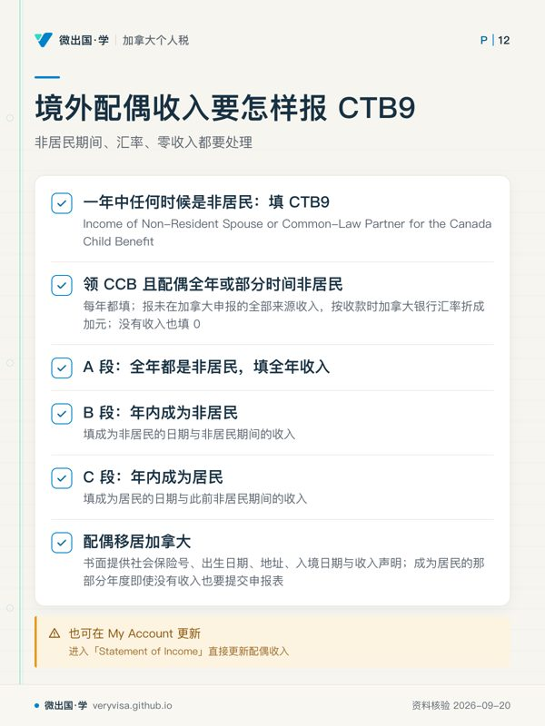
- 先看先按全年状态选表内分段，再整理要报的款项与换汇依据。
- 易漏申请人是与孩子同住并主要照护的一方；两位家长同住时法律推定女性家长为主要照护者。
- 下一步去讲义，并带迁入日期、全年款项和申报方式找持牌专业人士核对。
自愿披露：被提示与未被提示差一档，十年有两把尺子
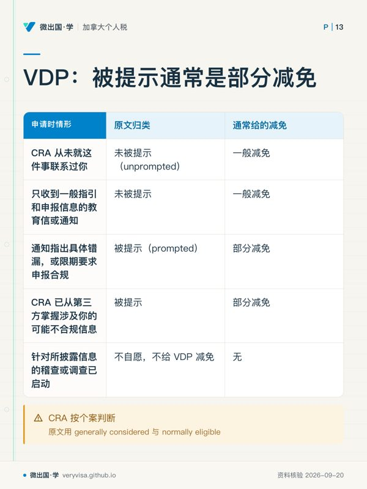
- 先看先定位申请发生前 CRA 掌握了什么，再看右栏后果。
- 易漏即使没收过信，CRA 若已从外部报送拿到涉及你的不合规资料，仍会按被提示处理；账户交换、平台报送增多，“没信＝一般减免”不成立。
- 下一步去练习，并带来信、账户记录与外部报送线索找持牌专业人士核对。
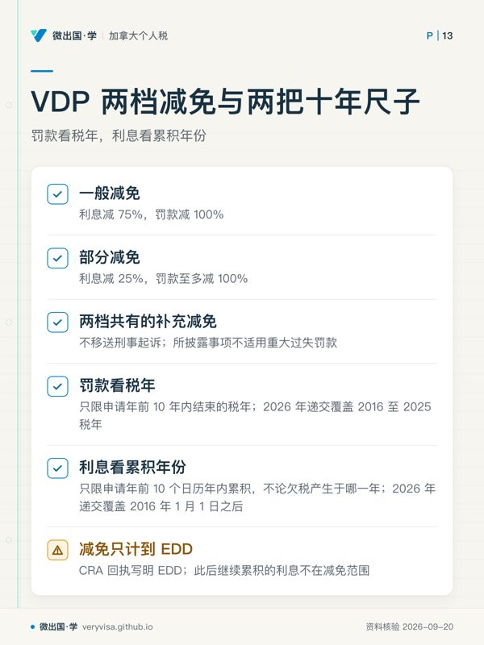
- 先看先认所属档位，再分别审查两类费用各自的时间边界。
- 易漏别把两把尺子混成一种年度口径；回执日之后仍会按原规则继续计息。
- 下一步去练习，并带申请年份、涉税年度和回执日期找持牌专业人士核对。
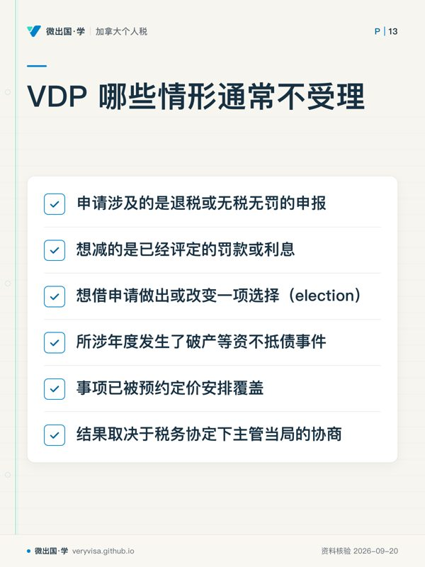
- 先看先看事项本身是否卡在不受理入口，再谈减免。
- 易漏曾获 VDP 减免后要保持合规；再次申请只在情况超出本人控制，或与前次是不同事项时才会考虑。
- 下一步去讲解，并带历次披露与已评定项目找持牌专业人士核对。
学签工签访客：183 天只给没有居住联系的人用
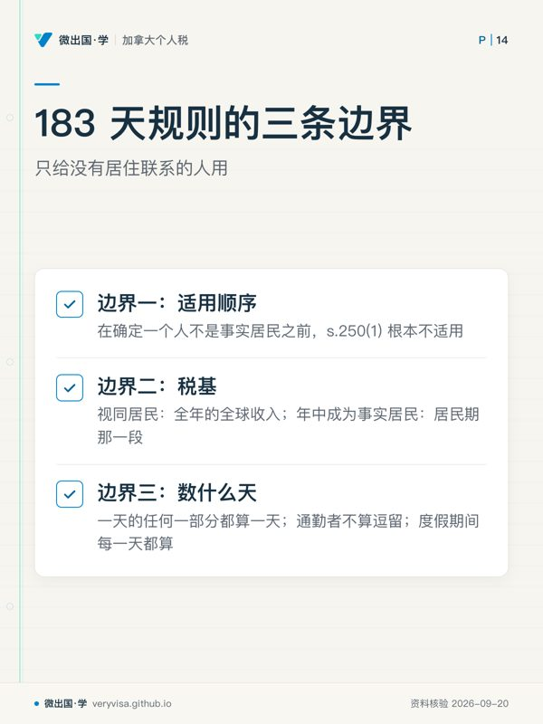
- 先看先看第一格：有居住联系时，天数不是起点。
- 易漏累计按日历年，不要求连续；同样待两百天，收入范围可能完全不同。
- 下一步去讲义核对居住联系，再带出入境记录找持牌专业人士。
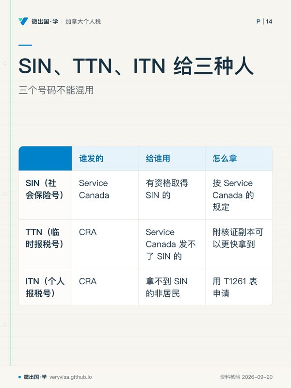
- 先看先看中间一栏，按是否能拿到 SIN 区分号码。
- 易漏报税截止前 SIN 还没下来不要等；应不填 SIN、提交纸质申报表并附说明，以免产生迟报罚款与利息；没有 SIN 不能网上申报。
- 下一步去讲义核对该用哪个号码；有截止风险时带申报材料找持牌专业人士。
住加拿大的美国公民：那块注定抵不掉的 3.8%
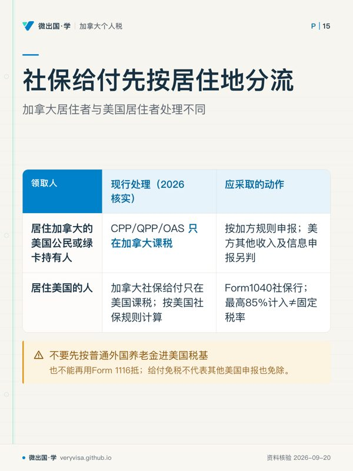
- 先看先看领取人住哪国；居住地直接决定这三类给付在哪一边课税。
- 易漏旧文「美国全额计入后抵免」只是我方推论，已按IRS明文**撤回**；别再照旧文处理。
- 下一步去练习把本人情形套入，再核对其余跨境申报。
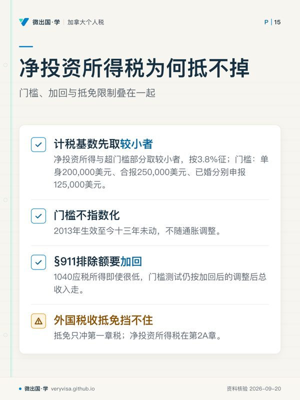
- 先看先看第一行的取小规则，再看后三项为何让常见减税手段失效。
- 易漏别把1040上的低应税所得当成安全信号；这里仍要看加回后的门槛口径。
- 下一步去讲解把资本利得年份与总收入并排测算。
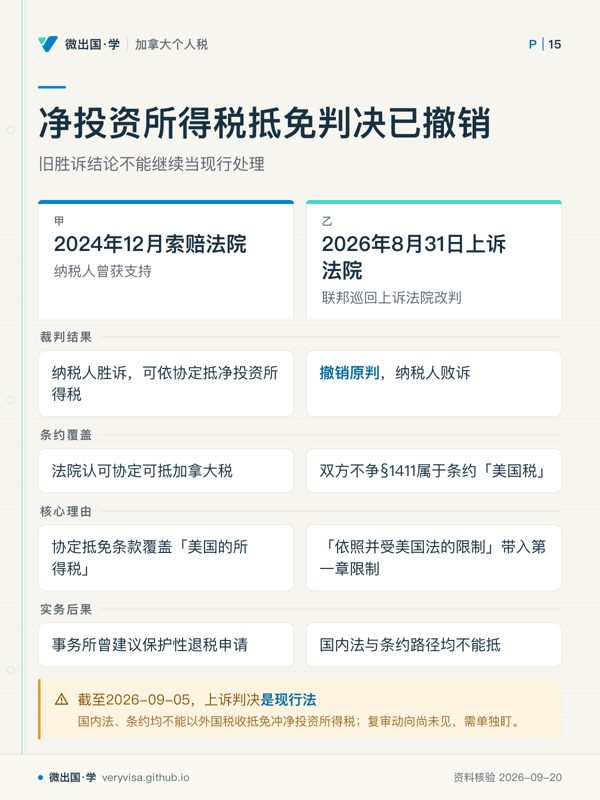
- 先看先对照两个判决日期；右栏才是当前应采用的法律状态。
- 易漏三路缓和：改逐项扣除（全年外国税都改，常更贵，须两套算）；择时利得；压低调整后总收入（排除额仍加回）。
- 下一步去进度单列这格，并向持牌人士确认是否要保留退税权利。
离境申报：25,000 的门槛、10,000 的那条线、担保的安全线

- 先看先把免除项与剩余财产分开，再判断是否落入强制申报。
- 易漏截止日通常为离境次年的 4 月 30 日；没有应纳税款也可能发生迟报罚款。
- 下一步到练习判断离境当天的财产是否达到申报条件。

- 先看先按单件市值选左栏或右栏，再横向看两项处理。
- 易漏右栏还要求列明具体描述、获取日期和离境当天的市场公允价值。
- 下一步到练习按单件公平市场价值逐项判断。

- 先看先辨认离境前是否属魁省税务居民，再看对应栏的免担保界线。
- 易漏容易错在把两套机关当成同一程序；原魁省居民还要分别办省税延期。
- 下一步去路线核对离境税延期步骤，并请持牌人士确认担保资产。
加拿大人的美国房产：出租 30%、卖出按总售价预扣

- 先看先分清：什么都不做与主动申请，后果完全不同。
- 易漏折旧并非自选：住宅出租按 MACRS 直线法、27.5 年回收（替代系统 30 年）；基础按『已扣除或本可扣除』额减少，没申报也照算。
- 下一步看讲解；带历年报税与房产成本记录，请持牌专业人士评估是否需补救。

- 先看先找成交价区间，再核验受让方打算怎么使用房屋。
- 易漏过户前交 Form 8288-B；买方用 8288，卖方留 8288-A，次年报 1040-NR。
- 下一步去讲解核对成交结构；请持牌跨境税务师确认预扣与次年申报。

- 先看先找两边结果分叉的来源：交易日换汇，而非只盯美元涨跌。
- 易漏跨境抵免有天花板；源国多收的部分不能挪到另一边消化。
- 下一步看讲义；带买卖日汇率、成本和美国完税资料，请持牌专业人士复核 T1。
BC 买房过户那一刀：三级累进、20% 外国买家税、三道独立的门

- 先看先把成交价值切成区间，再把各段应纳额相加。
- 易漏进入较高边际档，不代表此前价款也改按更高比例计征。
- 下一步去练习复核分档；请持牌专业人士确认成交估值口径。

- 先看先核受让方身份，再核所在地是否触发省级附加征收。
- 易漏本拿比 1,500,000 加元自住例：过户省级税款达 328,000 加元，占房屋标的价值 21.87%。
- 下一步去知识卡核对归类；签约前请持牌律师审查受让结构。

- 先看先从右栏判断是在看省级税款还是联邦禁令，再回到条件。
- 易漏省府页面自己提醒：指望这笔退税去买房，等于承担「一年内拿不到身份」的风险。
- 下一步去练习把登记日与购房日分开核对，再带身份问题找持牌专业人士。
预填申报与代为申报：一个要你动手，一个不动手也算报了

- 先看先看左右两栏的动作差异，因为这是两种机制最直观的分界。
- 易漏预填还要2026-10-31前已报2025税年；代报还要截止日后仍未自报、全部收入有信息单、应税收入不超过基本额。
- 下一步去知识卡核对预填邀请条件，再带个案错漏问题找持牌专业人士。

- 先看先看带日期的那一行，时间门槛比账户设置更容易漏看。
- 易漏条件齐全也只是进入候选范围；CRA 没公布从合格人群里怎么挑。
- 下一步去练习逐项自查，再到进度确认账户资料和通讯设置。

- 先看先看中间一项：任何具体收入门槛说法，都先问出处在哪。
- 易漏没收到邀请，也照常用其他免费渠道报税；家里多年没报的先补。
- 下一步去讲解，带着「这句话的出处是什么」逐项核对。
美国人开加拿大小公司：三步判定顺序不能颠倒

- 先看先注意两层门槛叠加，美国人与全体美国股东是不同判断。
- 易漏Category4按6038控制规则另判，不能把两步说成「一开始归属、下一步撤掉」。
- 下一步去练习用例子，再带归属问题找持牌专业人士。

- 先看先用两个例子分别核美国人与美国股东总持股。
- 易漏Category4按6038控制规则另判；951(b)/958用于美国股东与CFC判断两步。
- 下一步去练习用两个例子，再带归属范围问题找持牌专业人士。

- 先看先从左栏分申报人，再用右栏判断哪些类别常见。
- 易漏落多个类别不等于交多份表。一家外国公司一份Form 5471；真正变化的是附表清单。
- 下一步去练习逐类核附表清单，再带控制与CFC问题找持牌专业人士。
T1135：罚款与复评期是两件独立的事，成本额不是市值
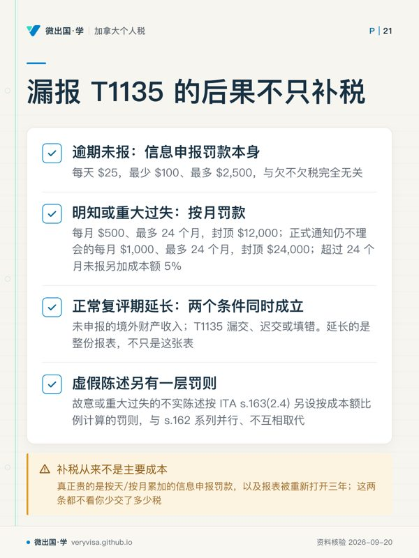
- 先看先盯复评那一格：触发关键在两个条件要一起出现。
- 易漏别把风险只理解成补税；罚款与旧年度重新打开，是两条独立于税额之外的后果。
- 下一步去练习，把复评触发条件分别写出来。
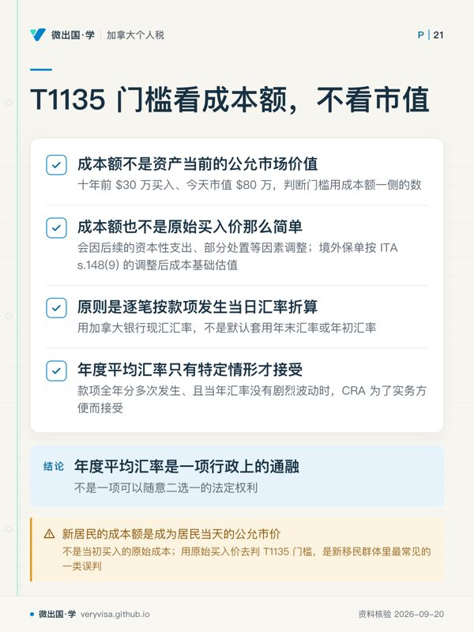
- 先看先看房产例子，弄清为什么不能拿今天价格直接代入门槛判断。
- 易漏新居民别沿用历史买价；年均值也只能在全年多次发生且波动不剧烈时近似。
- 下一步去练习，拿自己的资料逐项重算并标出换算依据。
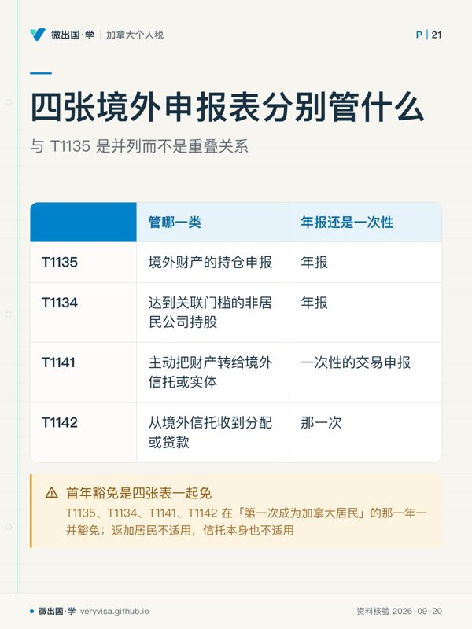
- 先看先横着看同一行：左边辨对象，右边辨按年还是按交易发生。
- 易漏最容易漏的是首年口子并非单表特例；再次成为居民的人，以及信托主体，都不在这里面。
- 下一步去练习，把自己的情形先按四类归位。
FBAR 与 8938：两个机构两套门槛，报了一张不免另一张
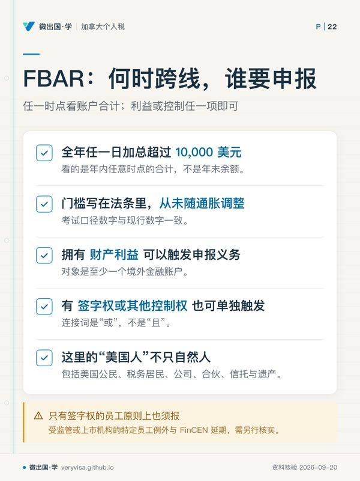
- 先看先找两件事：年内有没有越线，以及你对账户能否主张权益或控制。
- 易漏不要把“只代签”当成当然排除项；员工豁免和延期安排须单独确认。
- 下一步去练习做门槛与身份判定；边缘情形交持牌专业人士核实。
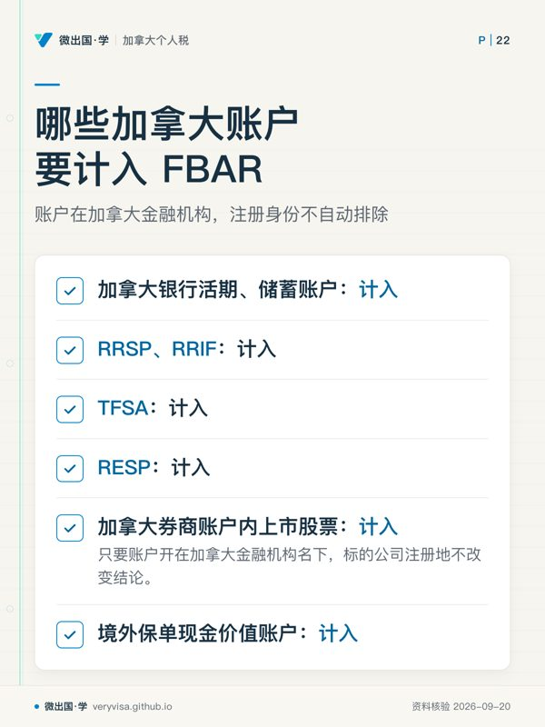
- 先看先按账户所在金融机构判断，不要只盯着里面买的是什么证券。
- 易漏加拿大注册计划不能借用美国境内退休计划的排除；TFSA 也没有美国税务免税待遇。
- 下一步去练习逐项勾账户；注册计划或保单边界交持牌专业人士核实。
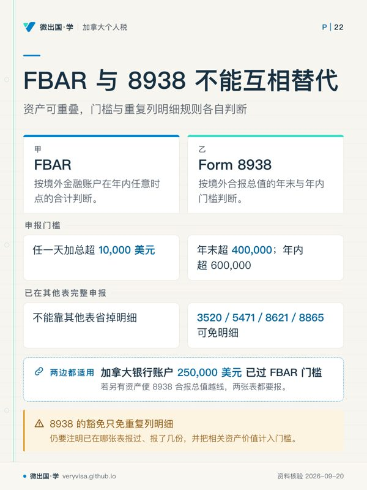
- 先看把两套门槛分开看，再找哪一边允许少列已经报过的资产。
- 易漏向一套制度交过资料，不会自动消掉另一套制度的申报责任。
- 下一步去练习做双表判断；资产分类或重复申报处理请持牌专业人士复核。
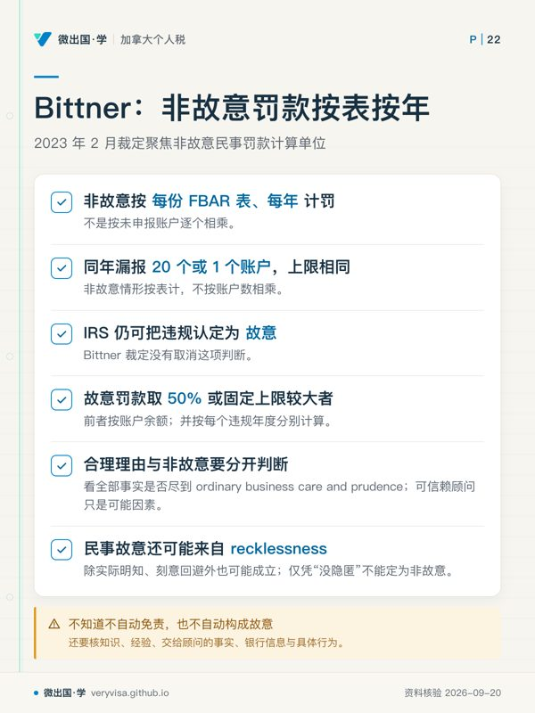
- 先看先看法院究竟改了哪一层：怎么算钱，而不是把责任分类一起改掉。
- 易漏单靠无知或未隐藏行为都不能定性；顾问介入也要连同背景资料审视。
- 下一步去练习做情境归类；事实记录与罚款风险请持牌专业人士评估。
主居所：四要件、两个选举，与不足 365 天就不是资本利得
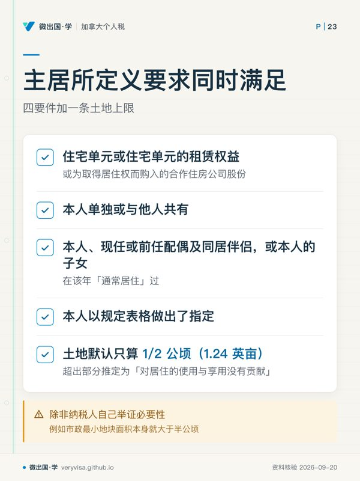
- 先看先看居住人和房屋关系两格，它们决定能否进入定义。
- 易漏「通常居住」不等于常住；度假屋短住几周也可，但不能是纯出租；CRA 房型含 cottage、房车、活动房屋与船屋。
- 下一步去练习做度假屋与大地块判断；边界情形带资料找持牌专业人士。
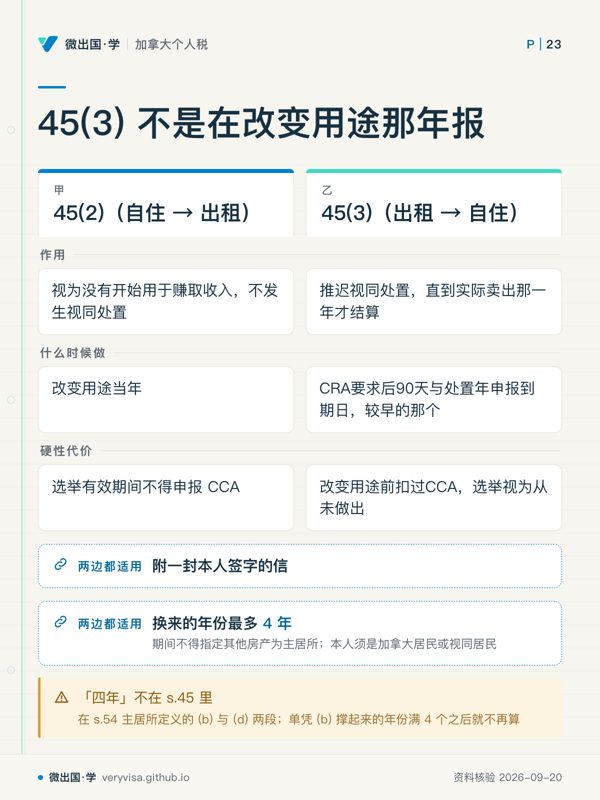
- 先看先看中间的期限行；左右真正分叉的是提交时点。
- 易漏右栏不能只等卖房；CRA 一旦发出要求，截止会被提前。
- 下一步去练习做用途转换时点题；涉及 CCA 记录再找持牌专业人士。
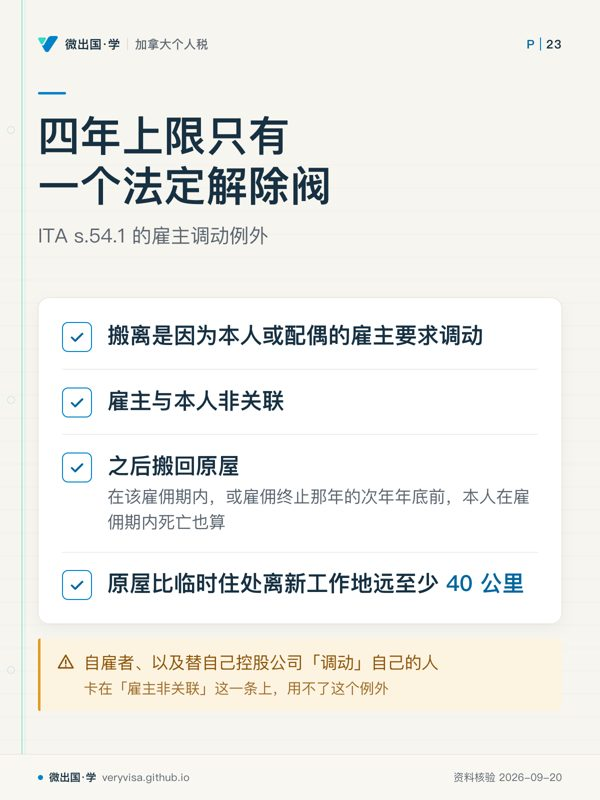
- 先看先核对关联关系；这一步会先筛掉部分看似合格的调动。
- 易漏返回原屋也有时间边界，且死亡情形另有包含规则，别只看距离。
- 下一步去练习逐项套条件；关系结构或雇佣安排复杂时找持牌专业人士。
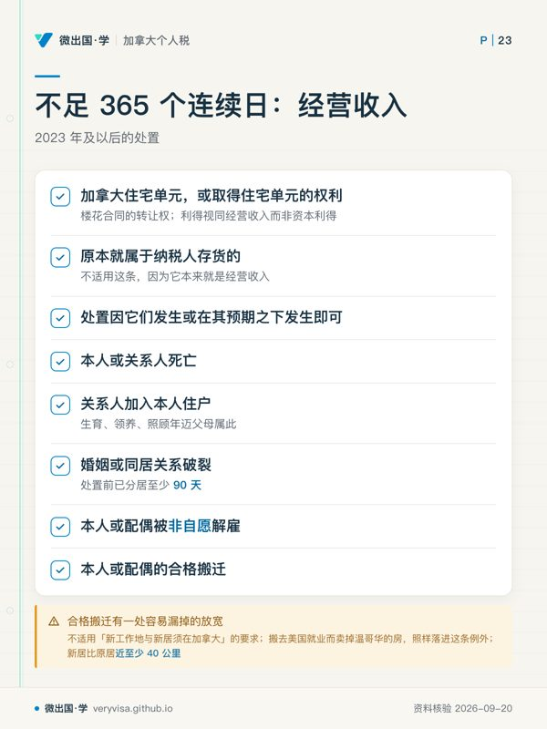
- 先看先看标题的持有门槛，再往下找是否落入排除或生活事件。
- 易漏别把例外只理解成事情已发生；为即将发生的事件而处置也可能落入。
- 下一步去练习先判收入性质，再核对生活事件；跨境搬迁找持牌专业人士。
PFIC：什么都不做的那条路最贵，选举的时间窗只有一次
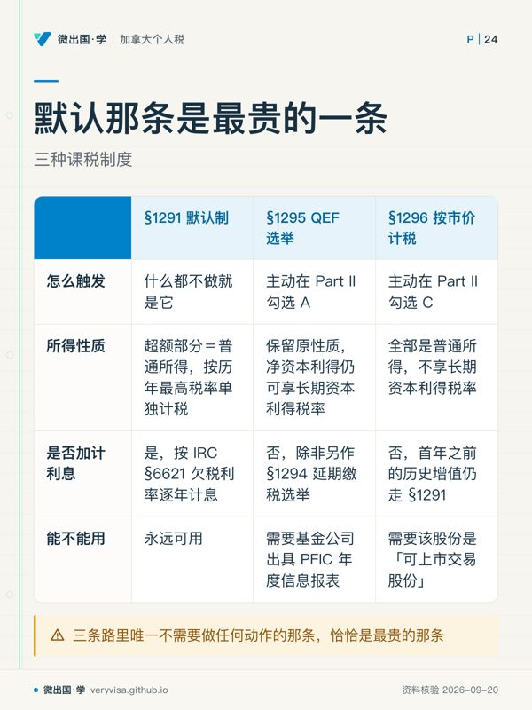
- 先看先看第一行：动作差异最直接地分开三条路。
- 易漏QEF 看基金当年实际 AIS；按市价计税还须满足 marketable stock 规定。
- 下一步去讲义核对可用条件，再带基金资料问持牌专业人士。
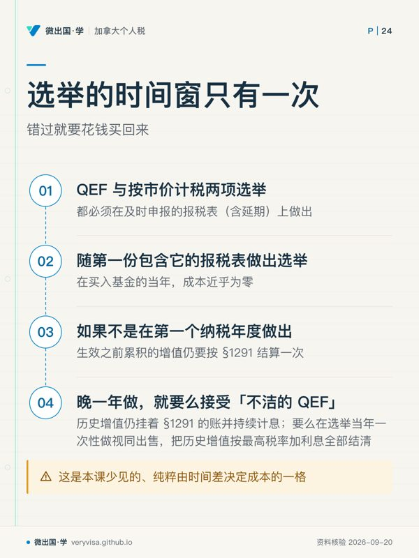
- 先看先看第三格：首次申报时点决定后面是否要清历史增值。
- 易漏延期包含在及时申报里；晚做后两种处理的经济后果不同。
- 下一步去路线核对持有首年，再带报税时间线问持牌专业人士。
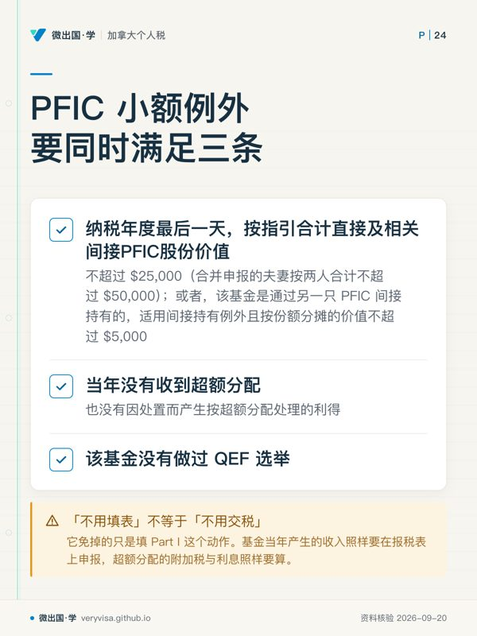
- 先看先看第 2 条，因为这一条最容易被忽略，再回头核对价值条件。
- 易漏合并申报的翻倍规则只放宽 $25,000 那一档；$5,000 的间接持有档不随合并申报翻倍。
- 下一步去练习逐只检查分配、处置及合计价值条件；链式持有再用讲解核对每一只。
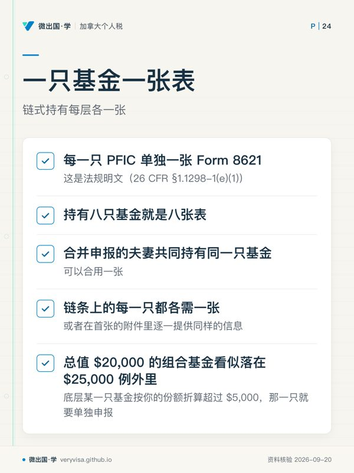
- 先看先看链式持有那格：申报单位跟着每只基金走，不是只看最外层。
- 易漏夫妻合用一张只限共同持有同一只基金；底层基金仍要逐只检查。
- 下一步去知识卡画出持有链，再带基金清单问持牌专业人士。
新移民首年：三步判定顺序不能倒，先问停留性质再数天数
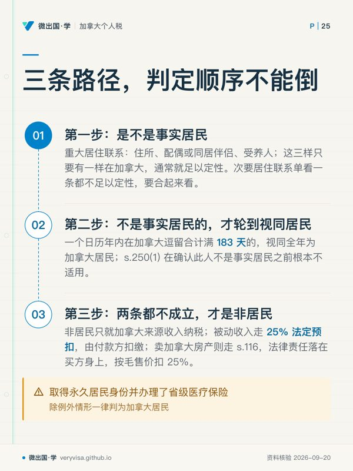
- 先看先看中间一步：天数规则只有前一层否定后才启用。
- 易漏重大联系可以单项定性；次要联系要合并判断，别把两类证据混在一起。
- 下一步去练习，用不同停留情形检验这条先后链。
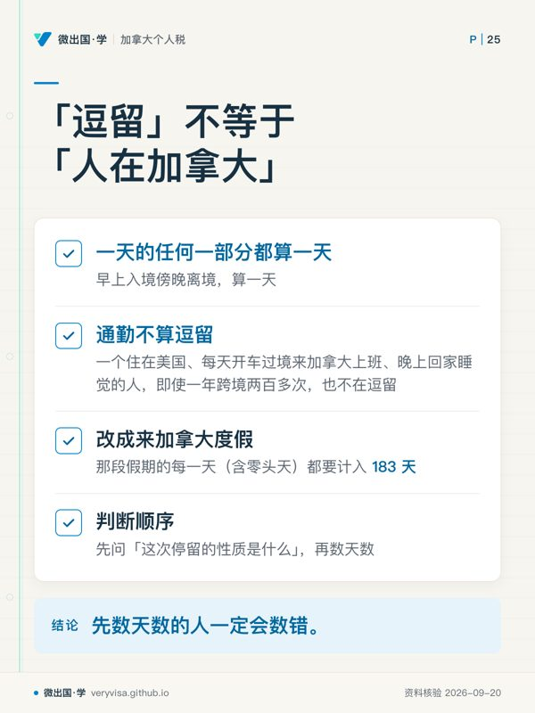
- 先看先看通勤这一格：跨境次数再多，也不直接等于逗留。
- 易漏换成度假后，原本不计的日子会进入门槛；身份没变，停留性质变了。
- 下一步去练习，先给每段行程分类，再计算日历日。
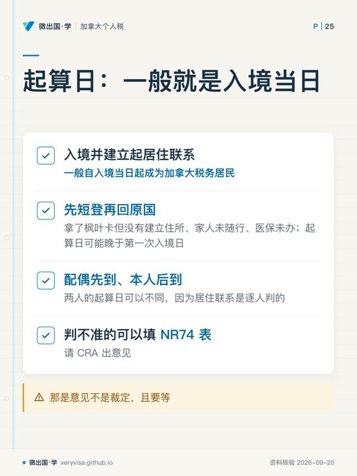
- 先看先看短登情形：第一次入境日未必就是起算日。
- 易漏住所、家人、医保都要摆事实；夫妻之间也不能共用一个日期。
- 下一步去讲义，把自己的居住联系按人分别列开。
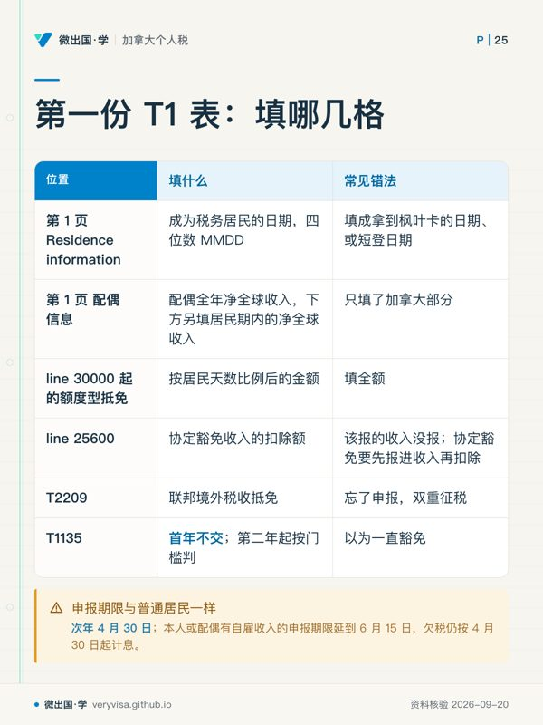
- 先看先看配偶信息这一行：同一人要区分两个时间口径。
- 易漏最容易混的是全球口径与居民期口径，以及首年和以后年度的处理。
- 下一步去练习，按六个位置逐项核对首份 T1。
排除还是抵免：选了就粘住，撤销带五年锁定

- 先看先辨别资格判断的两层结构，再看自己落入哪一种测试路径。
- 易漏年份完整性与日历天数是两套口径；旅行途中也可能改变计日结果。
- 下一步去练习，拿首年和部分年度分别判断可用哪条测试。

- 先看先看第三步，撤销后再采用同一选择的摩擦集中在那里。
- 易漏两项选择彼此独立；以后想重新采用哪一项，就分别受其撤销历史影响。
- 下一步去练习，把搬家、税法变化、换雇主放进长期比较。

- 先看先看「取小」与比例式，它们决定抵免不会按境外已缴税全额照搬。
- 易漏余额能跨年，但顺序、期限和类别都有限制；走小额简化还会失去跨年空间。
- 下一步去练习，先把收入归类，再把各类余额分别代入计算。

- 先看先看四项门槛，关键是这笔钱在法律上是不是所得税。
- 易漏工资单或报表上的扣款名称不够；要区分最终税负与社保缴费的性质。
- 下一步去练习，把 T1 上各项付款逐项归到所得税或社保缴费。
注册账户：四个不同的日子、配偶 RRSP 的日历技巧、71 岁那一年

- 先看先看最容易混淆的 RRSP 与 FHSA，两栏一起读。
- 易漏FHSA 未用额度会结转到下一年，封顶 8,000 元；不会消失。
- 下一步去练习，把跨年供款、提取恢复与转换期限分开做题。

- 先看先看三行左右差异，再理解跨年位置怎样拉长等待。
- 易漏RRIF 最低提取额不受归属规则约束，只有超过最低额的部分才可能被归属回供款方。
- 下一步去练习，换两个相邻月份重做一次归属窗口判断。

- 先看先看年末前的处置项，再看 RRIF 首年与次年的差别。
- 易漏71 岁以下还有 1 ÷（90 − 年龄）的计算方式，不要和固定因子混用。
- 下一步去练习，把处置选择、最低额计算和配偶年龄选择拆开做。

- 先看先看法案有没有御准，再判断当前税年用哪套口径。
- 易漏提案还包括废除第二套小企业投资规则、废除注册投资登记制。
- 下一步去练习，见到拟定生效日时先核对法律状态。
出租房：CCA 不能造亏，卖出那天是两笔账不是一笔
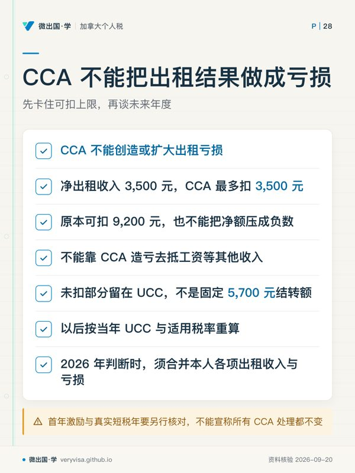
- 先看先找其他费用扣完后的净额，再判断这年还能拿多少折旧。
- 易漏没用完的空间不会冻结成一张固定额度；后年仍按当时类别余额再算。
- 下一步去练习页做上限题；若涉及首年激励或短税年，带取得与可用日期问持牌人士。
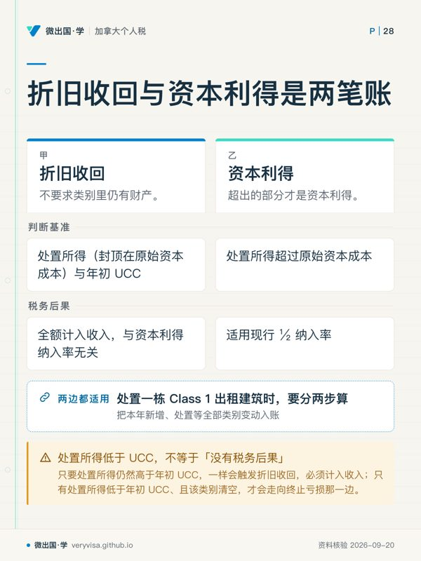
- 先看最容易被简化成一句话讲错的部分，先看两笔账为什么分开。
- 易漏很多业主以为亏本卖房就什么都不用报；低于原始资本成本只是不会有资本利得。
- 下一步练习：卖出物业那一天，按两步算。
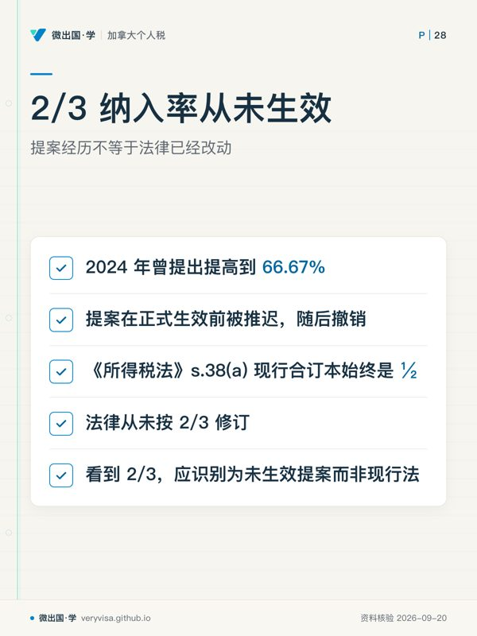
- 先看先看法律到底有没有改，不要把立法过程当成已生效规则。
- 易漏2026 税年仍容易混淆，旧文章与旧课件可能继续写 2/3。
- 下一步去知识卡页核对资本利得纳入率；遇到旧资料，先查其所述是否已正式生效。
去世那一年：没有遗产税，但有一次强制变现
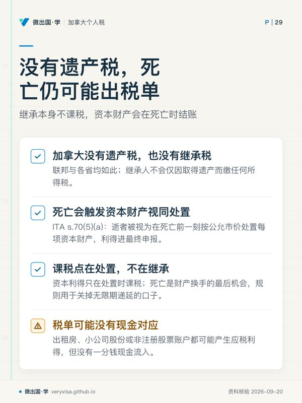
- 先看先区分「取得遗产」与「死亡时资产结账」。
- 易漏应税利得出现时未必同时收到现金，遗产还要单独安排流动性。
- 下一步去讲义核对不同资本财产怎样进入最终申报。
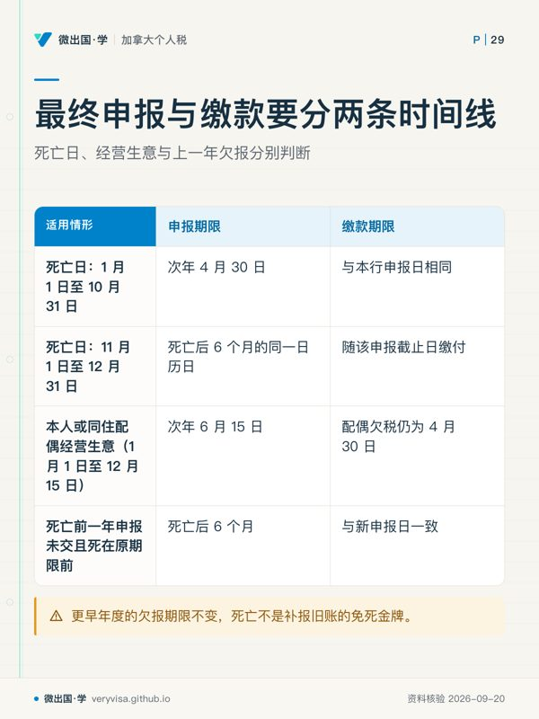
- 先看横着看同一情形下的报表日期与付款日期。
- 易漏自雇延期看死亡当日本人或同住配偶是否在经营生意，不看过去是否有自雇收入。
- 下一步去练习分别算两条时间线，别只记一个截止日。
- 先看沿流程先判一般处理，再识别可改写处置金额的通道。
- 易漏配偶滚转不是申请制；真正门槛还包括居民身份、受让对象与归属条件。
- 下一步去知识卡核对哪些财产满足滚转条件。
- 先看先找本期可利用的豁免、亏损与较低税率，再看延后是否仍有价值。
- 易漏作出选择会把特定财产改为死亡时确认利得，需逐项测算最终申报。
- 下一步去练习逐项比较两种处理，再带清单问持牌专业人士。
补报程序怎么选：SFOP、SDOP、DFSP、DIIRSP 各管一类

- 先看先比较入口门槛，再看报表形态与代价差异。
- 易漏普通通知不必然等同已开始稽查；通知性质要另行判断。
- 下一步去路线核对自身入口；向持牌专业人士确认稽查状态。

- 先看先锁定身份类别，再逐项核对居留事实与递交动作。
- 易漏个人纳税识别号只在无社会安全号资格且尚未取得号码时，可随材料一并申请。
- 下一步去知识卡做身份分流；请持牌专业人士核验出入境记录。

- 先看先判漏项属于账户申报还是跨境信息表，再看补交路径。
- 易漏旧公众说明页返回 404 只代表链接失效，不足以据此认定程序撤销。
- 下一步去路线确认缺表类别；请持牌专业人士审查说明材料与所得税影响。
复评期与异议：三年不是无条件的保护伞
- 先看先看正常期限，再看法定例外。
- 易漏先问这份报表当年有没有可能被扣上可归因疏忽等失实陈述或符合法定境外申报例外，再谈年数。
- 下一步去知识卡，看「复评事项范围」。
- 先看先看拒签往往意味着什么，再看签放弃书换来的是什么。
- 易漏复评事项范围也须符合s152(4.01)。
- 下一步去讲义，看「多一点时间」与「撤销放弃」。
- 先看先看谁不是纯 90 天，再看错过期限后的延展窗口。
- 易漏CRA 被要求「以应有的速度」回应异议，实务中可能要等上一年。
- 下一步去练习，看「异议期限」与「申请延展」。
- 先看先看欠税利息，再看两个例外。
- 易漏追缴暂停保护的是「真实有争议」的纳税人，不是把异议当缓兵之计的人。
- 下一步去讲解，看「追缴暂停」与「两个例外」。
RMD 与 Roth：起始年龄在往后排，罚则已从 50% 降到 25%
- 先看先看首次提取何时真正到期，再判断第一年要不要动账户。
- 易漏选择推迟会把两年的收入并到一年报，税务影响不只在提取时间。
- 下一步去讲解，带着「首次提取是否推迟」找持牌专业人士核对。
- 先看先按出生年份找位置，再区分已经定稿与仍有重叠的情形。
- 易漏拟议规章只是建议；留空的出生年不能直接按提案处理。
- 下一步去知识卡，带着出生年份与账户情况找持牌专业人士复核。
- 先看先看罚则下降需要哪些动作，再看纠正机会何时结束。
- 易漏纠正期不是固定两年；另申请豁免也要有合理错误且已经补救。
- 下一步去练习，把「何时完成补救」带去找持牌专业人士核实。
- 先看先看「判断」这一行，分清两套规则各自在处理哪类取款问题。
- 易漏最后轮到的增值部分，未满足合格条件时才计税，并可能触发早取附加税。
- 下一步去讲义核对首次供款与每笔转换或滚存，再带时间点找持牌专业人士。
离境：哪一天算走是三个日期取最晚，排除清单里没有金额门槛

- 先看先看结论条，再逐项对照家庭与新定居国的时间点，避免把较早离开误作身份切换日。
- 易漏最容易漏掉例外与居住联系：回原本国家、配偶暂留卖房，以及住所是否保留，都可能改变判断。
- 下一步去讲义核对居住联系，再带家庭离境时点找持牌专业人士。

- 先看先看第二行的身份结果，再回头比较房屋的实际使用安排。
- 易漏最容易漏的是入住权：正常出租与保留空置住所，CRA 的判断方向不同。
- 下一步去练习换几种留房情形做判断，再带租约与居住安排找持牌专业人士。

- 先看先从最后一步倒推：条约结果一旦改变居民身份，要马上检查视同处置。
- 易漏这条路径不要求实际搬家；住所和银行账户仍在加拿大，也可能进入离境规则。
- 下一步去讲解梳理四级顺序，再把潜在离境税带给持牌专业人士核对。

- 先看先看资产能否落进四个法定盒子；落不进去再看离境日市值。
- 易漏价值主要来自加拿大地产的非上市公司股份，日后实售还可能再走 s.116 清税证明。
- 下一步到练习逐项归类；房产控股结构拿持仓清单找持牌专业人士。
退休收入分割：转满 50% 往往不是最优，CPP 要另外申请

- 先看先看最后一项：报表上出现过，不等于能用于分割。
- 易漏年龄边界另有两套规则；较年轻的一套只留下少数养老金与身故相关款项。
- 下一步去练习逐项判断收入类型，再带年龄问题找持牌专业人士。

- 先看先分清家庭合计口径和个人口径，优化目标因此不同。
- 易漏受让人的年龄要单独过门槛，不能只看转出人的资格。
- 下一步去练习同时检查两人的边际税率和递减区间。

- 先看先看年末居民身份，再看分居究竟因为什么。
- 易漏异地本身不是关系破裂；求学、就医或公务出差属于例外。
- 下一步去练习按居民身份、分居原因和年度选择逐项判断。

- 先看先比「分享的对象」：两套制度动的是不同层面。
- 易漏一方 CPP 很少时，真正改变月给付分配的是给付分享，不是 T1032。
- 下一步去讲义核对申请入口，再判断两套制度是否一起用。
弃籍税：不是弃籍那一年就翻篇了

- 先看先把身份入口分成公民与长期居民两条，再看条约年度怎样影响计数。
- 易漏实际离美或证件到期，不等于税务身份自行结束；正式终止程序仍是关键。
- 下一步去练习，用两个身份案例判断哪些年度计入 LTR。

- 先看先盯免税额怎样分到不同增值资产，最容易把净额逻辑带错。
- 易漏没有真实成交也会形成报表利得；选择延后缴税，还会带来担保和利息。
- 下一步去练习，用增值资产和亏损资产同时存在的例子检查分配。

- 先看顺着四步看责任怎样从转移事件落到收受方，再看申报时间。
- 易漏resident 按 domicile，不是所得税 SPT；可扣除转移与既有遗产赠与税申报还要另核。
- 下一步去练习，用多年后的遗赠案例核责任人和时间线。

- 先看先看两类转移项目，再看居民口径与申报时间。
- 易漏domicile 与所得税居留测试不是同一套判断；时间窗口也比 1040 晚。
- 下一步去练习，把收受方身份、转移性质和申报年度分开核对。
资本亏损：三条互不相同的通道，表面亏损扣不掉但不消失
- 先看先横读首行，三列能不能拿来减同一种收入，一眼就能分开。
- 易漏例外的适用范围很窄，别把任意收入的处理扩到另外两栏。
- 下一步去练习，做一题工资、一题投资出售，再检查归类。
- 先看先盯第二格的买方身份和期末状态，这两个条件最容易漏。
- 易漏排除情形远不止图中所列；这里只抓最常用的三类。
- 下一步去练习，用股票卖出再买期权的例子做判断。
- 先看先从最右一列读起，再向左看旧口径，变化方向最清楚。
- 易漏指数化看着接近也可能累积出差距，旧口径不能直接替代现行值。
- 下一步去练习，分别代入税率与起点，检查自己有没有沿用旧数。
遗产 T3：同一套房子的增值，一半在 T1 一半在 T3
- 先看先看左右时间边界，再看纳税主体和涨跌区间如何变化。
- 易漏前段的视同处置有配偶或配偶信托滚转例外，别把这条规则当成无条件。
- 下一步去讲解核对一项资产跨 T1、T3 时应落在哪一段。
- 先看先从规则收紧的日期看到期点，抓住这条时间链。
- 易漏房子、债、税和清税证明说明了过渡期为什么客观上要花时间。
- 下一步去讲义核对 GRE 条件，再带窗口结束后的税率问题找持牌专业人士。
- 先看先分清身份通道与情形通道，再把各触发点放回 B 通道。
- 易漏两种免报情形仍要给每位受益人书面清单，别把免报理解成什么都不用留。
- 下一步去练习按 A、B 两条分别判断，边界情形再问持牌专业人士。
- 先看先把报表、付款、单据看成三个动作，再核对它们的截止逻辑。
- 易漏发给受益人的单据要寄到最后已知地址；闰年要另外核对日期。
- 下一步去进度确认账号是否已办好，再用练习把年结日换成截止日。
1040 三件事：门槛就是标准扣除、身份按 12 月 31 日判、七档只动边界

- 先看先看收入与对应金额的关系，再区分普通非受养人与MFS。
- 易漏2027 年 Pub 501 2026 版发布后须回核并撤销「推算」标注。
- 下一步去练习，按身份与年龄找对应金额，再带结果找持牌专业人士。

- 先看先对照左列资格，再用右列排除名称带来的误读。
- 易漏同一人可能看似落入不止一种身份，不能只凭「未婚」判断。
- 下一步去练习，先写年末状态，再逐项核住房、子女和同住条件。

- 先看先把税率结构和各年起点分开看，别把两类数字混在一起。
- 易漏考试口径列与现行列对应不同税年，已婚合报也不能机械翻倍。
- 下一步去讲义，对照考试口径列与现行列再做练习。

- 先看从上到下读四步，先把身份定准，再进入金额与税阶。
- 易漏离婚且抚养子女时，字面上的「未婚」还不足以直接报单身。
- 下一步去练习，先写身份判断，再查对应门槛，最后算税。
三种投资收入：外国股息定性上归进「利息」那一行

- 先看横向看每一行，计入方式、优惠和凭证来源要配套判断。
- 易漏名字里有“股息”不代表能用本国公司的那套优惠，先辨付款方所在国。
- 下一步去练习拿陌生凭证先分类，再把跨境凭证问题带给持牌专业人士。

- 先看顺着流程先判断待遇，再落到申报位置，最后才处理境外扣税。
- 易漏最容易错在把境外公司的付款套进本国公司分红机制。
- 下一步去练习按一张境外投资凭证走流程，遇到条约冲突再问持牌专业人士。

- 先看先按受让人分行，再横看持有期间收益与卖出结果是否回到转移人名下。
- 易漏这种差异会让预期大幅升值、暂不生息的资产更常被转给未成年子女。
- 下一步去练习把家庭转移案例按受让人和收入类型拆开，再带具体安排问持牌专业人士。

- 先看先按交易定价、融资纪律、关系变化与重复计税几类问题来读。
- 易漏借款安排不是设好一次就结束，后续年度若逾期，保护会失效。
- 下一步去练习逐项核对家庭转移安排，再把协议和付款记录交持牌专业人士。
美国这几类收入：免税方向相反，门槛几十年没动过
- 先看起手先定位除息日，再核对买卖两端落在哪段时间里。
- 易漏计天口径两端不对称；基金分配别套股票本身的资格条件。
- 下一步去练习，用日期关系独立判断一笔股息能否享优惠。
- 先看先横向看联邦和州两层，不要被同一个“免税”词带偏。
- 易漏是否附表不只看金额，账户性质和代收身份也会单独改变答案。
- 下一步去知识卡，把两类利息分别归位，再核对申报义务。
- 先看顺序是先算基数，再看身份对应的两道界线。
- 易漏这套基数只是判定福利应税比例，不是把社安金整笔计税。
- 下一步去练习，换不同身份算出落在哪个区间。
- 先看把历史特例与账户类型拆开处理，别拿旧记忆替代现行口径。
- 易漏有税后基础时，传统 IRA 的每笔领取不一定全按同一种方式计税。
- 下一步去练习，分别判定失业金和两类 IRA 分配的纳税结果。
T1 总览：谁必须申报、四条期限、迟报罚款的基数
- 先看先扫六个触发点，再单独检查能否拿回福利或保留结转。
- 易漏「反正没欠税就不用报」在监管者眼里和在自己钱包里是两个答案。
- 下一步去知识卡带着自己的收入来源逐项勾选；边界情形找持牌专业人士。
- 先看先按身份找行，再处理业务例外与死亡条件。
- 易漏死亡规则只在10月后且不晚于原截止日时触发；两个年度要分别判断。
- 下一步去讲解对照本人情形；死亡跨年度时请持牌专业人士核期。
- 先看顺序别反：先看截止当天还差多少钱，再选对应算法。
- 易漏代扣已足额时，晚交表格不等于这项罚款自动出现。
- 下一步去练习用一组样例分别求本金、罚款和计息。
- 先看先把问题归到申报、付款、异议或年度参数四类。
- 易漏旧说法常把表格结构和政策进度一起带偏，遇到旧页面要重核。
- 下一步去模考逐项排除；异议身份或时限边界请持牌专业人士核对。
T4：应税福利怎么判、两套罚则、从收到 T4 到填进申报表
- 先看先用停车位和公司手机两个例子对照，再读判断落点。
- 易漏团体伤病保险只是同一逻辑的应用，别靠保险名字记税务结果。
- 下一步去练习，换一个雇主提供的好处重新判断。
- 先看先定位是哪一侧出了问题，再读这一栏会发生什么。
- 易漏别把一边履行完当成另一边自动结清；这里是两个主体分别处理。
- 下一步去练习，把同一件事分别从两边判断。
- 先看先按六个节点顺序走，避免只盯某一个框。
- 易漏自动填表有滞后，开始报税时系统里可能还缺雇主数据。
- 下一步去练习，把一张 T4 的框与申报行逐项对应。
- 先看先看 TD1 的作用，再追多个收入来源汇总后的结果。
- 易漏报税季出现补税，不要先把原因归到某一张 T4 上。
- 下一步去练习，用两份工作场景检查源头扣缴。
身份与配偶信息：六种婚姻状况、90 天规则、按 12 月 31 日定省
- 先看先看左栏定义，再用右栏排除容易混淆的情况。
- 易漏变成分居要先满 **90 天** 才能通知，生效日仍追溯到开始分开住那天。
- 下一步去知识卡，核对你在年末当天的实际状态。
- 先看先分清普通法计时、短暂分开、正式分居是三件事。
- 易漏“分居成立日”和“满门槛日”不是同一天。
- 下一步去练习，用一条跨年时间线判断应填哪种状态。
- 先看先把伴侣身份、收入和自雇状态分开核对。
- 易漏对方没报税也不能留空净收入栏。
- 下一步去讲义，对照伴侣资料和自雇状态逐项补齐。
- 先看先找决定省表的字段，再看其余三类居住信息。
- 易漏看年末落在哪省，不比较全年各省停留时长。
- 下一步去练习，用一次年末搬家案例判断应填哪个省。
- 先看先看适用人群：一个管税收分配，一个管收入免税。
- 易漏即使全部收入免税，仍建议每年申报；CCB 等现金福利以已申报为前提。
- 下一步去讲解，带身份、住址、雇主地和工作地逐项核对。
- 先看沿三步看：共享什么、谁能进未来名册、最后影响什么。
- 易漏这两问不参与任何计算，别为它们改别的字段。
- 下一步去练习，只判断哪些字段会进入税额计算。